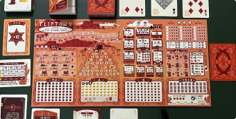

게시판
함께 나누는 보드게임 이야기
리클러스
후기
최근 즐긴 게임들 간단한 후기

아 요거는 한 판 간신히 해봤네요.
담주부터 슬슬 해보려고요. 후기는 다음으로 미룰까 했는데, 챕터마다 클리어 조건을 주고 아이템도 하나 주는 그런건데, 살짝 맛만 봤지만 솔플러분들 간보지 마시고 그냥 츄라이츄라이 하시라는 말씀 드리고 가도 될 것 같아용.
조회 541
18
체념
자유
약속을 자꾸 파투내는 모임원에 대하여
안녕하세요. 오늘도 겪은 일을 이야기해 보고자 이렇게 글을 씁니다.
여러분도 혹시 모임에 가입되어 있으신가요?
저는 모임원의 모임장으로 활동 중인데요.
특정 멤버가 약속 1시간 전 못 간다고 하거나 당일에 연락을 합니다...
어떻게 조치를 취해야할까요? 하아.. 오늘도 게임 다 준비했는데 못하게 생겼습니다...
+많은 유저 분들의 조언 너무 감사드립니다... 앞으로 모임을 할 때 꼭 참고하겠습니다!
조회 1,673
9
28
23